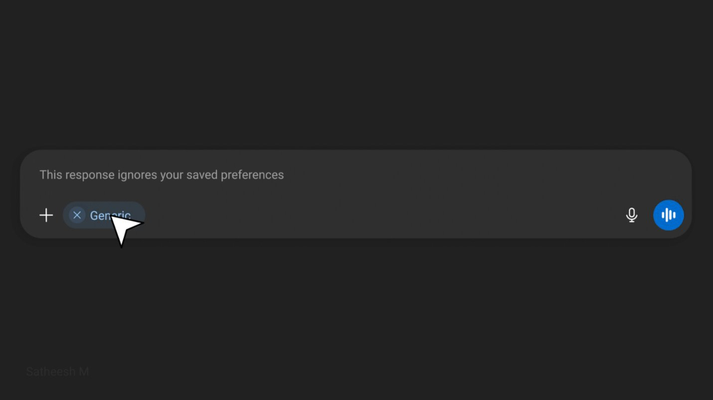
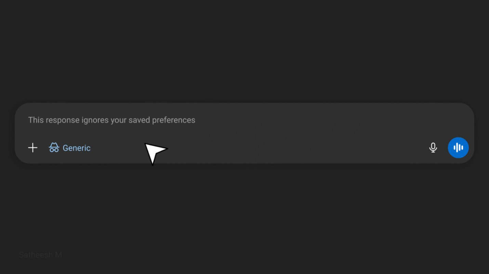
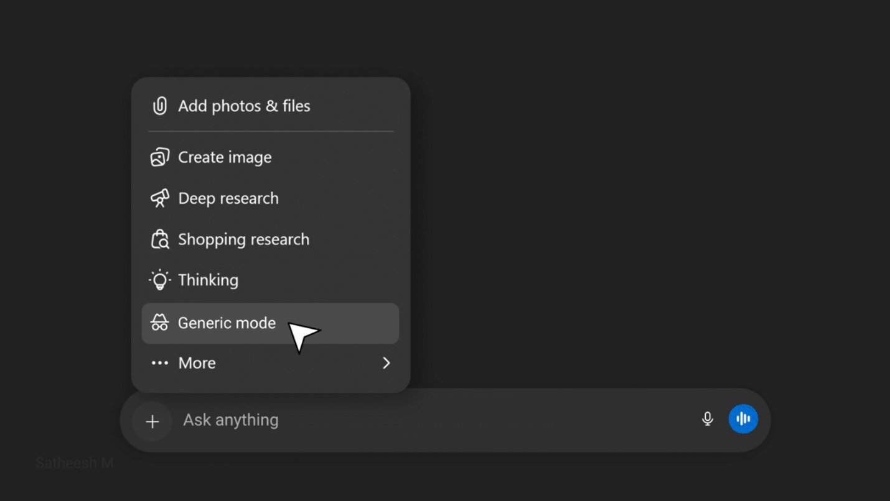

The Context
While using ChatGPT, I personalized my chats to get responses aligned with my profession. At first, it felt efficient and intelligent. The system understood my domain, my vocabulary, and my intent, without me explaining it every time.
Over time, that personalization faded into the background and became the default.
The Friction
One day, I asked a simple, generic question.
The response came back heavily framed through my professional lens. It wasn't incorrect, but it wasn't neutral either.
I wasn't asking as a designer. I was asking as a user seeking a general answer.
The Hidden Cost
To get what I wanted, I had to:
- Rephrase my prompt
- Explicitly say "answer generally"
- Mentally filter out assumptions
Personalization had crossed a line from being assistive to being prescriptive.
The system remembered who I was, but didn't ask who I wanted to be for this question.
Why This Matters
Good UX feels invisible. This felt noticeable and effortful.
The ChatGPT wasn't wrong. But it wasn't listening to the right signal.
Insight
The strongest signal (my saved profession) was overpowering the most important one (my current intent).
Personalization without visibility or control became a source of cognitive load.
UX Issues Found
UX Principles Affected
The Solution — Context Control at the Point of Action
Instead of hiding personalization in settings, I introduced a Generic mode option directly under the menu — the same place where I can change how a response is generated (Thinking, Deep Research, etc.).

Selecting "Generic" mode tags the query — telling the system to ignore saved preferences for this response

When Generic mode is active, the chip displays with the mode icon — making the context state visible to the user

Generic mode sits alongside Thinking, Deep Research, and other modes — discoverable at the point of action, not buried in settings
Why this works
The user doesn't have to go into Settings, disable personalization globally, or rephrase their prompt. They simply select "Generic" before sending — the same way they'd select "Thinking" for a complex reasoning task. One tap. No disruption to the flow. Full control over context, precisely when it matters.